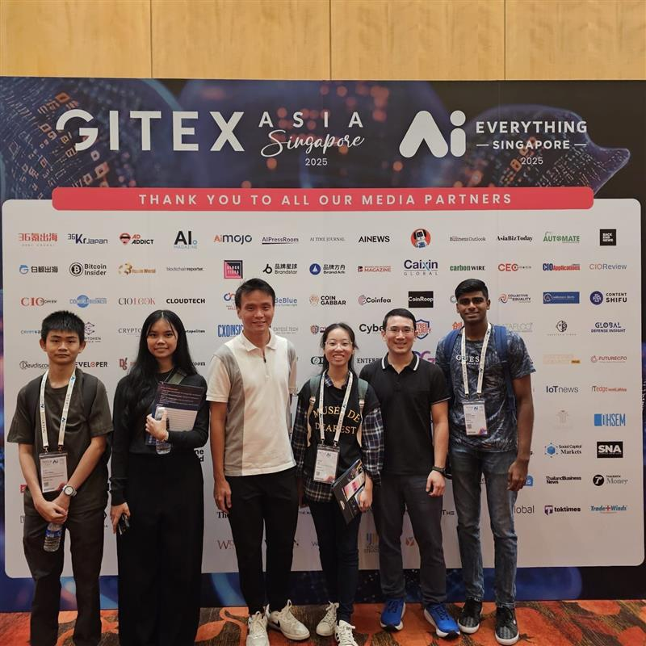
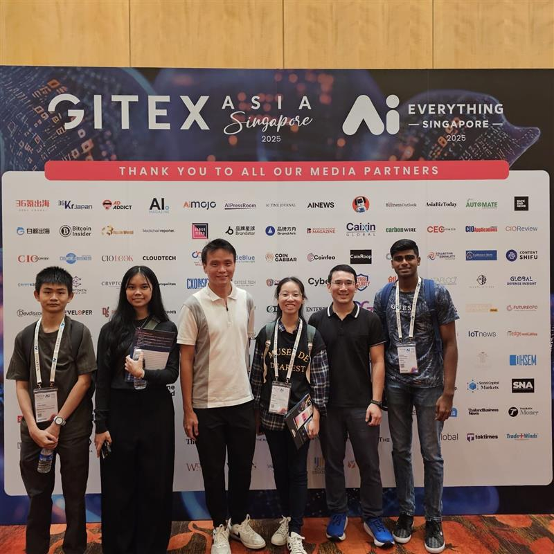

üìì Weekly Internship Journal
üìÜ Week 1 (14‚Äì18 April)

Kickstarted my internship journey with onboarding at the Transformation Office. I collected my equipment and got briefed on Mandai's vision. I was immediately looped into a core project which was the MyProject100K townhall video. Brainstormed storyboard ideas and planned interview structures. Additionally, I tested an internal HR chatbot prototype for usability and responsiveness. I also initiated a comparative GenAI analysis with my intern mates using 8 different platforms such as ChatGPT, Claude, Copilot, Grok to gauge how Mandai parks are featured in AI-generated tourism content. This foundational week set the tone for what would be a highly dynamic internship experience.
üìÜ Week 2 (21‚Äì25 April)
 

Processed and visualised results from the GenAI comparison project using Excel Pivot tables. Joined the South Zone Herbivore Feeding Team — an incredible firsthand look into animal care processes. Attended GITEX Asia, one of the region’s biggest tech events, where I explored AI-powered robots, AR tools, and smart agriculture innovations. Also started automating procurement workflows with Power Automate Desktop. This week blended tech, nature, and inspiration perfectly.
üìÜ Week 3 (28 April‚Äì2 May)

Completed a working prototype of the Procurement RPA bot that automates file downloads, renaming, and uploading them into Sharepoint. Simultaneously progressed with video project logistics — finalised filming equipment, scheduled interviews, and created script drafts. I explored AI-powered image recognition tools and implemented confidence scoring for potential use cases in internal workflows such as receipt detection. Attended a Power BI masterclass and debriefed the “Day-In-The-Life” workflow observation with team leads to streamline process mapping using Miro.
üìÜ Week 4 (5‚Äì9 May)

Started developing a GenAI summary bot that extracts key highlights from lengthy web articles in Klook using prompt engineering to use for another RPA Project. Conducted GoPro + DJI mic testing in different field environments to ensure quality audio for interviews. Participated in a Power Apps workshop and AWS IoT Lab, gaining experience in low-code app development and real-time sensor integrations. Reached out to HR and Veterinary departments to align timelines for upcoming interview shoots.
üé• Week 5 (12‚Äì16 May)

Facilitated a feedback session with Park Ops on improvements derived from the workflow mapping. Carried out video interviews with HR, Vet, and Park Ops teams for Project 100K. Managed lighting, background setup, and question delivery while filming. Drafted the first video cut in Filmora. Balanced the creative responsibilities of media production while maintaining RPA workflow testing and enhancements in parallel. I Learned how to multitask across completely different domains efficiently.
ü߆ Week 6 (19‚Äì23 May)

Finalised and exported the Project 100K video for review by senior leadership and prepared it for the Townhall. Meanwhile, I made process upgrades to the Procurement Bot, including dynamic folder creation and improved exception handling. Collaborated with Microsoft’s technical team to debug a web automation bug in Power Automate, learning about authentication flows and selectors. This week felt like a breakthrough — both creative and technical deliverables hit maturity.
üèÅ Week 7 (26‚Äì30 May)

Balanced refinement of the Procurement RPA bot. The highlight was seeing our MyProject100K video showcased during Mandai’s company-wide townhall. It received great feedback from our Deputy CEO and marked one of my proudest milestones. Wrapped up QA testing and understood the importance of presentation, communication, and visual storytelling in corporate contexts.
üîß Week 8‚Äì9 (2‚Äì13 June)
Before
After
Focused purely on backend bot logic — restructuring flows for scalability and refining UI steps. Took part in a 5S cleanup in Zebra feeding zone to optimise space and process. Created visual flow diagrams to explain bot steps to non-tech users. Finalised retry logic, form data mapping, and completed integration testing. These weeks were intense but deeply satisfying as I got to polish and productionise the bot from start to finish.
üìã Week 10‚Äì11 (16‚Äì27 June)

Held enhancement sessions with the Procurement department to further tailor the bot logic to real business use cases. Delivered the final demo to HOD, received valuable feedback, and implemented minor tweaks. Marked the successful closure of my first major automation project since the start of my internship.
üß™ Week 12 (30 June‚Äì4 July)
Before Prompt Engineering

After Prompt Engineering

This week I took on an entirely new assignment focused on Microsoft 365 Copilot. I explored how to craft prompts that avoid hallucinations and ensure accurate, user-safe responses. I iterated on a query-specific prompt designed to provide Mandai’s park and membership prices while limiting fabrication.
I also tackled permission debugging inside Microsoft Forms hosted on SharePoint. Uploaded images were not rendering for internal viewers, so I analysed access settings and made them visible to the Mandai domain. Later in the week, I researched Microsoft add-ins that could help staff productivity across Outlook, Teams, and SharePoint.
üîç Reflection: This was a week of deep experimentation. I learned how enterprise AI features like Copilot require careful prompt crafting and testing ‚Äî especially when accuracy is critical. It also reminded me that sometimes the smallest things (like a missing permission) can affect access, perception, and productivity.